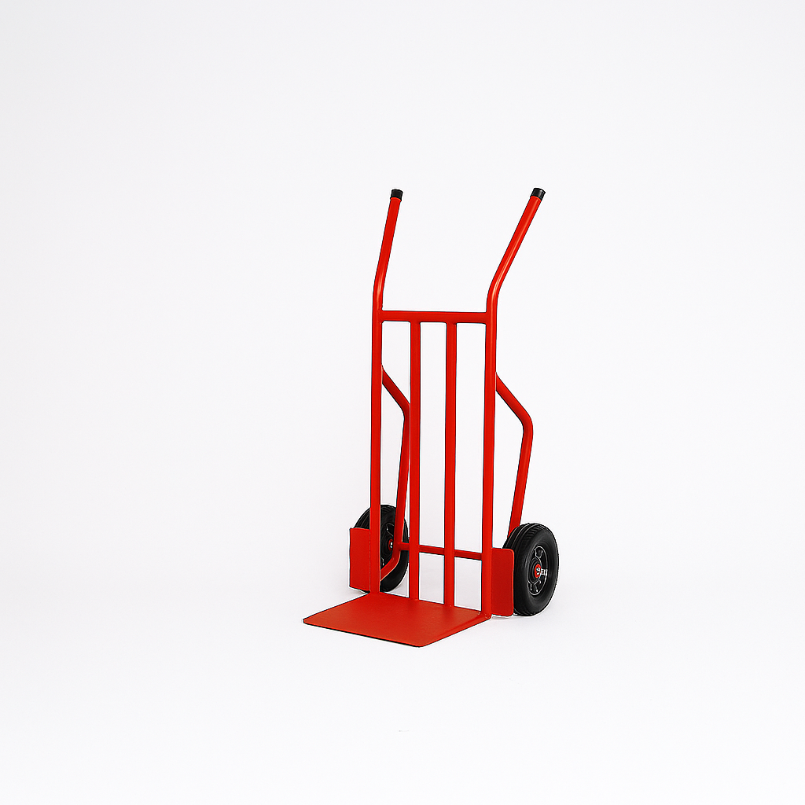

COD. CI-210
Carro CI-210
Especial para cargas versátiles: cajas, productos con forma cúbica y uso general de bodega.
- Altura 1,2 m
- Plancha 3 mm
- Rueda maciza 10”
Precio según cotización · Ferreterías y cliente final